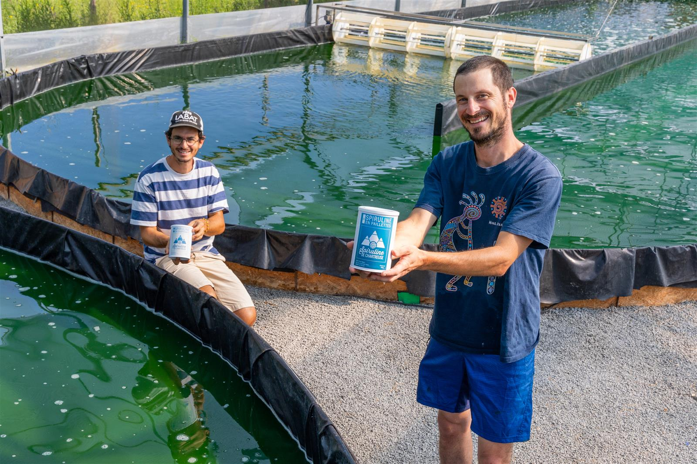
Notre spiruline
De la culture au conditionnement, tout est fait à la main, sur notre ferme au pied de la Chartreuse.

De la culture au conditionnement, tout est fait à la main, sur notre ferme au pied de la Chartreuse.
Chaque sachet est le résultat d'un choix : celui de faire les choses bien, localement, de A à Z.
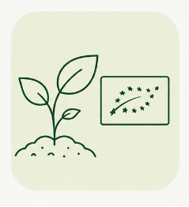
Contrôlée chaque année par un organisme agréé. Sans pesticides, sans OGM, en eau douce de Chartreuse.
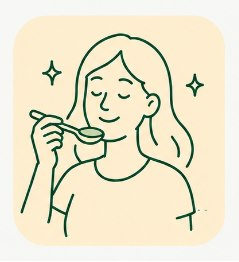
Notre souche et notre séchage à basse température donnent une spiruline au goût doux, discret, légèrement herbacé. Loin du goût fort des spirulines industrielles.
Flore bactérienne, métaux lourds, microcystines : chaque année, sans obligation légale. Parce que votre confiance se mérite.
Bâtiment passif bois-paille auto-construit, séchoir solaire, panneaux photovoltaïques, valorisation du CO₂ de la brasserie voisine.
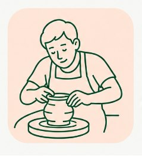
De la culture au conditionnement, chaque étape est réalisée à la main par Maxime et Renaud sur notre ferme du Touvet.
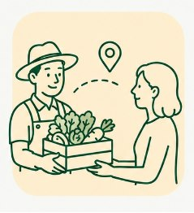
Vente directe depuis la ferme, sur les marchés locaux et en ligne. Du producteur à votre table, sans intermédiaire.
Chaque matin de mai à octobre, le même rituel artisanal recommence.

Les bassins sont agités en continu par des roues à aubes pour maintenir la spiruline en suspension sans briser ses fragiles spirales. Nous utilisons uniquement des intrants autorisés en agriculture biologique, avec un système d'ombrage adapté. Notre souche non flottante favorise une concentration élevée en phycocyanine, le pigment bleu antioxydant caractéristique de la spiruline.
Chaque matin, la spiruline est pompée depuis les bassins et filtrée sur des toiles en inox — d'abord à 100 µm, puis à 50 µm. L'eau traverse les mailles et il reste une crème verte dense : la spiruline concentrée, prête pour le pressage.
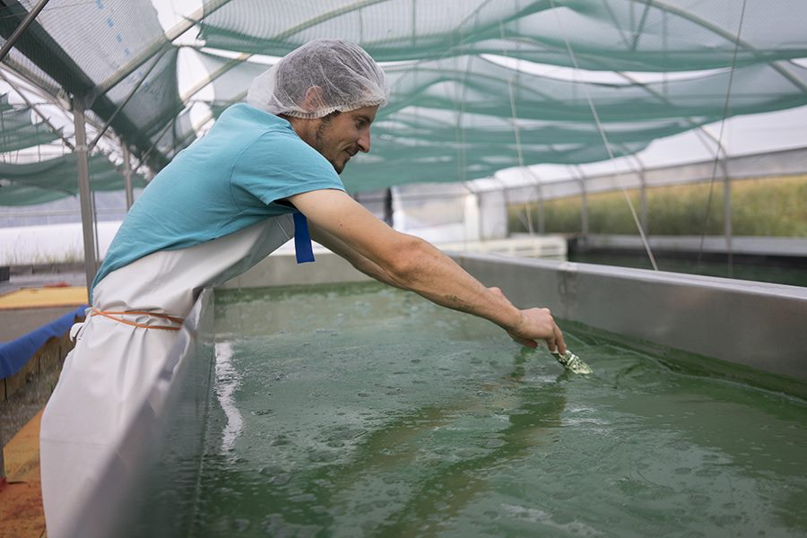
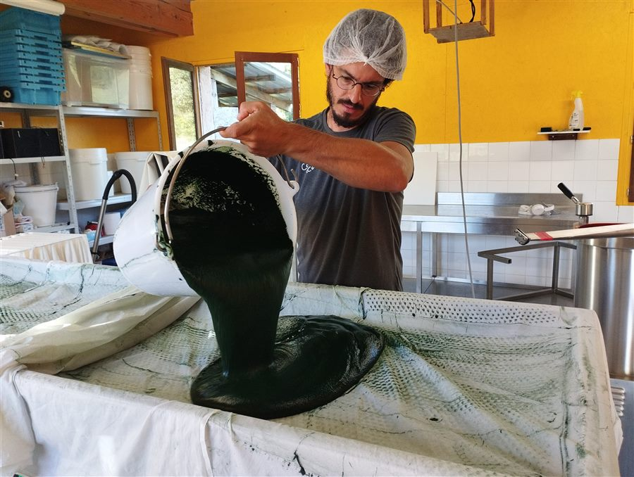
La crème est enveloppée dans des toiles de fromager et pressée sous vide. Ce procédé préserve l'intégrité des spirales sans chauffer. On obtient une pâte ferme comparable à de l'argile : c'est la spiruline fraîche, déjà comestible.
La pâte est passée dans un poussoir à saucisse qui la transforme en longs spaghettis verts. Ces filaments seront séchés pour donner les paillettes, réduits en poudre ou compressés en comprimés selon la forme souhaitée.
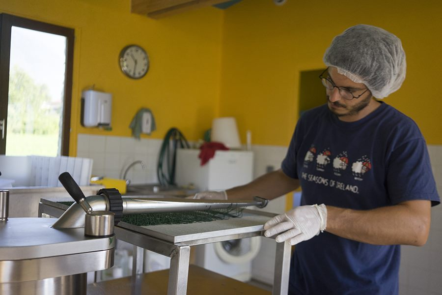
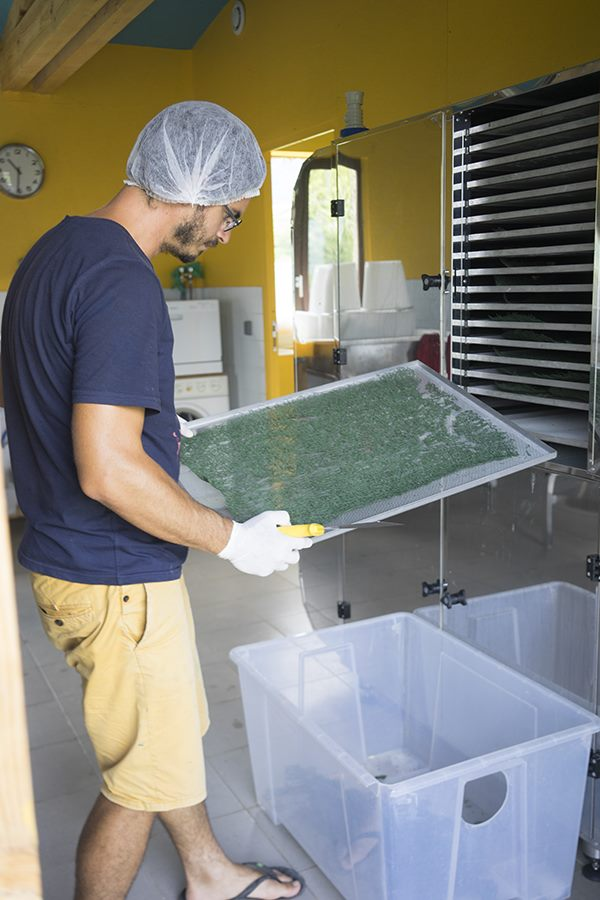
Les spaghettis sont séchés à 40 °C maximum, dans notre séchoir à l'aide des armoires solaires. Cette température basse préserve l'intégralité des vitamines, enzymes et pigments thermosensibles. Ces filaments sont séchés puis concassés manuellement.
Le conditionnement et l'étiquetage sont réalisés entièrement sur la ferme dans des emballages opaques. De la récolte au sachet, tout reste entre nos mains.
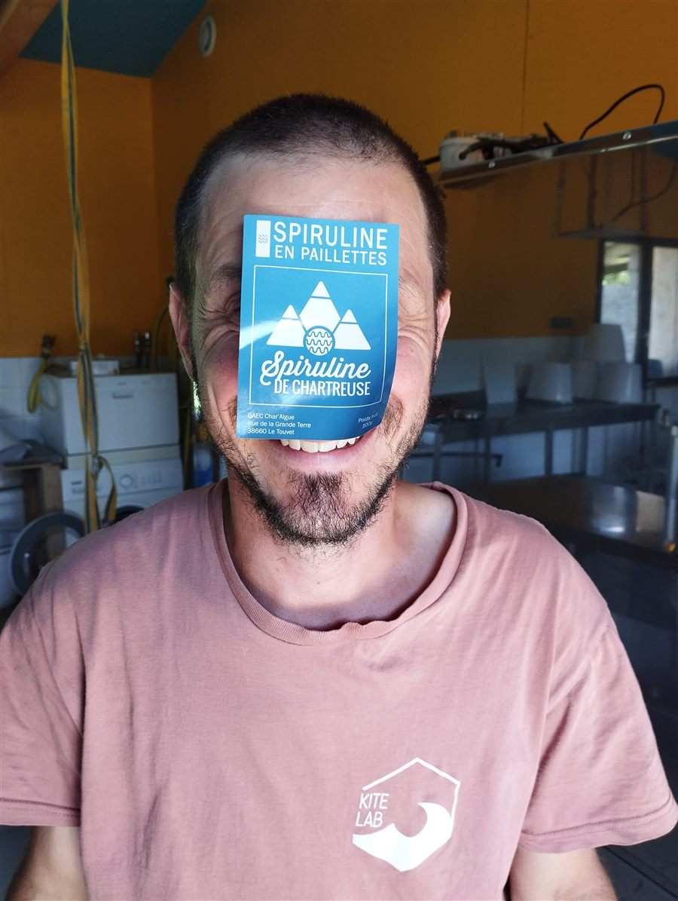
Première ferme de spiruline certifiée bio en Isère, auto-construite de A à Z. Parce que le bio est un minimum, pas un objectif.
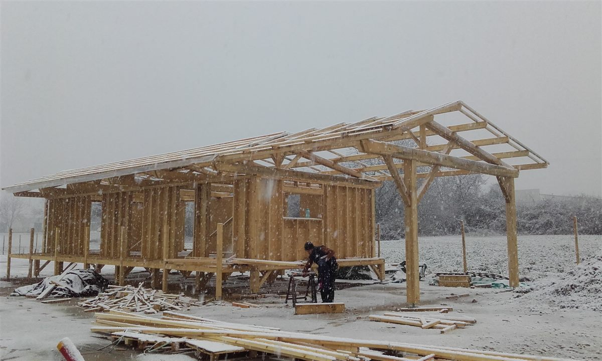
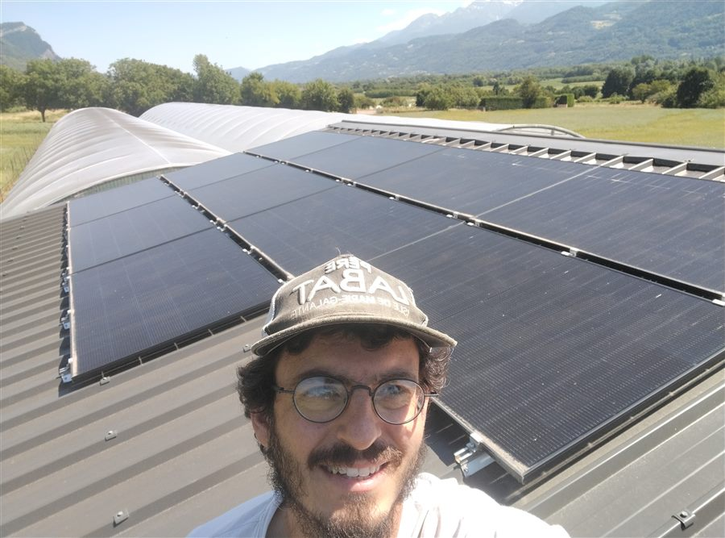
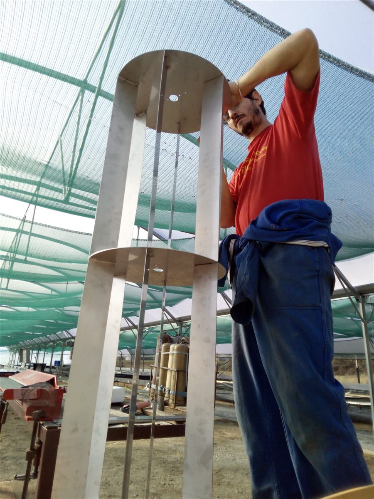
Nos serres, notre laboratoire et l'ensemble des structures ont été conçus et construits par nos propres mains. Le bâtiment principal est une éco-construction en ossature bois isolée à la paille : naturelle, locale et à très faible empreinte carbone.
Notre séchoir fonctionne par préchauffage solaire de l'air dans des armoires vitrées. L'électricité complémentaire est produite par nos panneaux solaires. Une consommation énergétique drastiquement réduite.
Nos bassins sont conservés sur deux saisons. Les sels minéraux sont recyclés grâce à deux bassins d'évaporation. Moins d'intrants, moins d'eau, moins de déchets.
Valorisation du CO₂ de la Brasserie du Habert
Seule ferme de spiruline à récupérer le CO₂ issu de la fermentation de la bière de notre voisine la Brasserie du Habert. Ce CO₂ est injecté dans nos bassins où la spiruline s'en nourrit. Un échange local gagnant-gagnant.

© 2025 GAEC Char'Algue — Spiruline de Chartreuse — SIRET 83044121800013 — TVA FR13830441218 — Hébergeur : Vercel Inc., 340 S Lemon Ave #4133, Walnut, CA 91789, USA